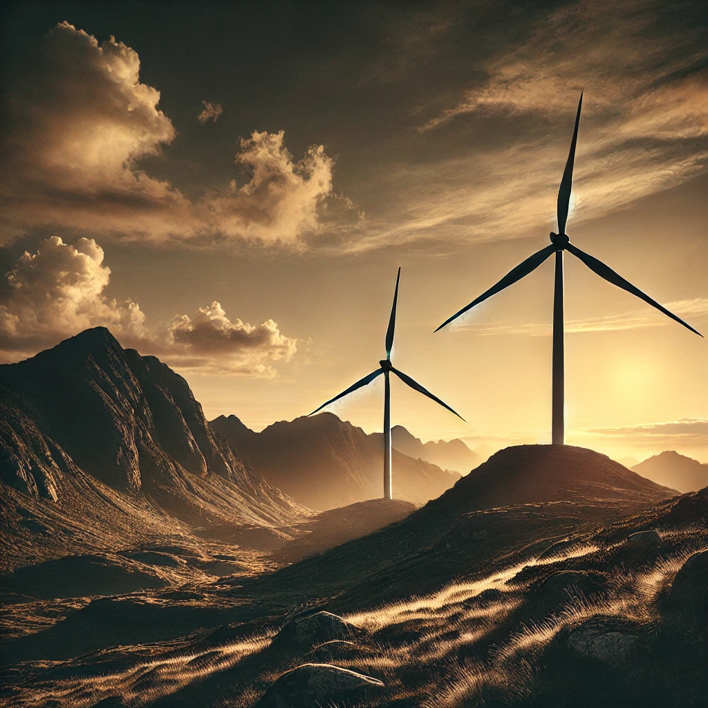

La energía eólica es una fuente de energía renovable que se obtiene a partir de la fuerza del viento. Se produce mediante el uso de aerogeneradores o molinos que transforman la energía cinética del viento en energía eléctrica. Cómo funciona Las corrientes de aire impulsan las aspas de los aerogeneradores. Las aspas transforman la energía cinética en energía mecánica de rotación. Esta energía mecánica de rotación es convertida en energía eléctrica por un generador eléctrico. La electricidad producida se conecta a las redes de distribución. Ventajas Es una energía limpia, inagotable y no contaminante. Es una apuesta sostenible que impulsa la economía local. Tipos de aerogeneradores Los aerogeneradores de eje horizontal (HAWT) son los más comunes y eficientes. Los aerogeneradores de eje vertical (VAWT) son omnidireccionales, por lo que no necesitan ajustarse para orientarse hacia el viento. Uso histórico La energía eólica se ha utilizado desde hace miles de años para impulsar los primeros barcos de vela o mover las hélices de los molinos. .
